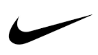
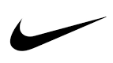
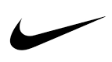

Millions of years ago, a few spiders abandoned the kind of round webs that the word “spiderweb” calls to mind and started to focus on a new strategy. Before, they would wait for prey to become ensnared in their webs and then walk out to retrieve it. Then they began building horizontal nets to use as a fishing platform. Now their modern descendants, the cobweb spiders, dangle sticky threads below, wait until insects walk by and get snagged, and reel their unlucky victims in.
In 2008, the researcher Hilton Japyassú prompted 12 species of orb spiders collected from all over Brazil to go through this transition again. He waited until the spiders wove an ordinary web. Then he snipped its threads so that the silk drooped to where crickets wandered below. When a cricket got hooked, not all the orb spiders could fully pull it up, as a cobweb spider does. But some could, and all at least began to reel it in with their two front legs.
Their ability to recapitulate the ancient spiders’ innovation got Japyassú, a biologist at the Federal University of Bahia in Brazil, thinking. When the spider was confronted with a problem to solve that it might not have seen before, how did it figure out what to do? “Where is this information?” he said. “Where is it? Is it in her head, or does this information emerge during the interaction with the altered web?”
In February, Japyassú and Kevin Laland, an evolutionary biologist at the University of Saint Andrews, proposed a bold answer to the question. They argued in a review paper, published in the journal Animal Cognition, that a spider’s web is at least an adjustable part of its sensory apparatus, and at most an extension of the spider’s cognitive system.
This would make the web a model example of extended cognition, an idea first proposed by the philosophers Andy Clark and David Chalmers in 1998 to apply to human thought. In accounts of extended cognition, processes like checking a grocery list or rearranging Scrabble tiles in a tray are close enough to memory-retrieval or problem-solving tasks that happen entirely inside the brain that proponents argue they are actually part of a single, larger, “extended” mind.
Among philosophers of mind, that idea has racked up citations, including supporters and critics. And by its very design, Japyassú’s paper, which aims to export extended cognition as a testable idea to the field of animal behavior, is already stirring up antibodies among scientists. “I got the impression that it was being very careful to check all the boxes for hot topics and controversial topics in animal cognition,” said Alex Jordan, a collective behaviorial scientist at the Max Planck Institute in Konstanz, Germany (who nonetheless supports the idea).
While many disagree with the paper’s interpretations, the study shouldn’t be confused for a piece of philosophy. Japyassú and Laland propose ways to test their ideas in concrete experiments that involve manipulating the spider’s web — tests that other researchers are excited about. “We can break that machine; we can snap strands; we can reduce the way that animal is able to perceive the system around it,” Jordan said. “And that generates some very direct and testable hypotheses.”
The Mindful Tentacle The suggestion that some of a spider’s “thoughts” happen in its web fits into a small but growing trend in discussions of animal cognition. Many animals interact with the world in certain complicated ways that don’t rely on their brains. In some cases, they don’t even use neurons. “We have this romantic notion that big brains are good, but most animals don’t work this way,” said Ken Cheng, who studies animal behavior and information processing at Macquarie University in Australia.
Parallel to the extended cognition that Japyassú sees in spiders, researchers have been gathering examples from elsewhere in the animal kingdom that seem to show a related concept, called embodied cognition: where cognitive tasks sprawl outside of the brain and into the body. Perhaps the prime example is another eight-legged invertebrate. Octopuses are famously smart, but their central brain is only a small part of their nervous systems. Two-thirds of the roughly 500 million neurons in an octopus are found in its arms. That led Binyamin Hochner of the Hebrew University of Jerusalem to consider whether octopuses use embodied cognition to pass a piece of food held in their arms straight to their mouths.
For the octopus, with thousands of suckers studding symmetric arms, each of which can bend at any point, building a central mental representation of how to move seems like a computational nightmare. But experiments show that the octopus doesn’t do that. “The brain doesn’t have to know how to move this floppy arm,” Cheng said. Rather, the arm knows how to move the arm.
Readings of electric signals show that when a sucker finds a piece of food, it sends a wave of muscle activation inward up the arm. At the same time, the base of the arm sends another wave of clenched muscles outward, down the arm. Where the two signals meet each other, the arm makes an elbow — a joint in exactly the right place to reach the mouth.Yet another related strategy, this one perhaps much more common and less controversial, is that the sensory systems of many animals are tuned in to the parts of the world that are relevant to their lives. Bees, for example, use ultraviolet vision to find flowers that have also evolved ultraviolet markings. That avoids the need to take in lots of data and parse it later. “If you do not have those receptors, that part of the world simply doesn’t exist,” said William Wcislo, a behaviorist at the Smithsonian Tropical Research Institute in Panama.
And then there are animals that appear to offload part of their mental apparatus to structures outside of the neural system entirely. Female crickets, for example, orient themselves toward the calls of the loudest males. They pick up the sound using ears on each of the knees of their two front legs. These ears are connected to one another through a tracheal tube. Sound waves come in to both ears and then pass through the tube before interfering with one another in each ear. The system is set up so that the ear closest to the source of the sound will vibrate most strongly.
In crickets, the information processing — the job of finding and identifying the direction that the loudest sound is coming from — appears to take place in the physical structures of the ears and tracheal tube, not inside the brain. Once these structures have finished processing the information, it gets passed to the neural system, which tells the legs to turn the cricket in the right direction.
The Brain Constraint Extended cognition may partly be an evolutionary response to an outsized challenge. According to a rule first observed by the Swiss naturalist Albrecht von Haller in 1762, smaller creatures almost always devote a larger portion of their body weight to their brains, which require more calories to fuel than other types of tissue.
Haller’s rule holds across the animal kingdom. It works for mammals from whales and elephants down to mice; for salamanders; and across the many species of ants, bees and nematodes. And in this latter range, as brains demand more and more resources from the tiny creatures that host them, scientists like Wcislo and his colleague William Eberhard, also at the Smithsonian, think new evolutionary tricks should arise.
In 2007, Eberhard compared data on the webs built by infant and adult spiders of the same species. The newborns, roughly a thousand times smaller than the adults in some cases, should be under much more pressure from Haller’s rule. As a result, they might be expected to slip up while performing a complex task. Perhaps the spiderlings would make more mistakes in attaching threads at the correct angles to build a geometrically precise web, among other measures. But their webs seemed “as precise as that of their larger relatives,” Eberhard said. “One of the questions is: How do they get away with that?”
Japyassú’s work offers a possible solution. Just as octopuses appear to outsource information-processing tasks to their tentacles, or crickets to their tracheal tubes, perhaps spiders outsource information processing to objects outside of their bodies — their webs.
To test whether this is truly happening, Japyassú uses a framework suggested by the cognitive scientist David Kaplan. If spider and web are working together as a larger cognitive system, the two should be able to affect each other. Changes in the spider’s cognitive state will alter the web, and changes in the web will likewise ripple into the spider’s cognitive state.
Consider a spider at the center of its web, waiting. Many web-builders are near blind, and they interact with the world almost solely through vibrations. Sitting at the hub of their webs, spiders can pull on radial threads that lead to various outer sections, thereby adjusting how sensitive they are to prey that land in those particular areas.
As is true for a tin can telephone, a tighter string is better at passing along vibrations. Tensed regions, then, may show where the spider is paying attention. When insects land in tensed areas of the webs of the orb spider Cyclosa octotuberculata, a 2010 study found, the spider is more likely to notice and capture them. And when the experimenters in the same study tightened the threads artificially, it seemed to put the spiders on high alert — they rushed toward prey more quickly.
The same sort of effect works in the opposite direction, too. Let the orb spider Octonoba sybotides go hungry, changing its internal state, and it will tighten its radial threads so it can tune in to even small prey hitting the web. “She tenses the threads of the web so that she can filter information that is coming to her brain,” Japyassú said. “This is almost the same thing as if she was filtering things in her own brain.”
Another example of this sort of interplay between web and spider comes from the web-building process itself. According to decades of research from scientists like Eberhard, a spiderweb is easier to build than it looks. What seems like a baroque process involving thousands of steps actually requires only a short list of rules of thumb that spiders follow at each junction. But these rules can be hacked from inside or out.
When experimenters start cutting out pieces of a web as it’s being built, a spider makes different choices — as if the already-built portions of silk are reminders, chunks of external memory it needs to retrieve so it can keep things evenly spaced, Japyassú said. Similarly, what happens in a web once it is built can change what kind of web the spider builds next time. If one section of the web catches more prey, the spider may enlarge that part in the future.
And from the opposite direction, the state of a spider’s nervous system can famously affect its webs. Going back to the 1940s, researchers have exposed spiders to caffeine, amphetamines, LSD and other drugs, attracting plenty of media attention along the way. Unsurprisingly, these spiders make addled, irregular webs.
Even skeptics of the extended cognition idea agree that this back and forth between the web and spider is ripe ground for more investigation and debate on how to interpret what the spiders are doing to solve problems. “It introduces a biological setup to the philosophers,” said Fritz Vollrath, an arachnologist at the University of Oxford. “For that, I think it’s very valuable. We can start a discussion now.”
But many biologists doubt that this interplay adds up to a bigger cognitive system. The key issue for critics is a semantic — but crucial — distinction. Japyassú’s paper defines cognition in terms of acquiring, manipulating and storing information. That’s a set of criteria that a web can easily meet. But to many, that seems like a low bar. “I think we’re fundamentally losing a distinction between information and knowledge,” Wcislo said. Opponents argue that cognition involves not just passing along information, but also interpreting it into some sort of abstract, meaningful representation of the world, which the web — or a tray of Scrabble tiles — can’t quite manage by itself.
Further, Japyassú’s definition of cognition may even undersell the level of thought that spiders are capable of, say the spider behaviorists Fiona Cross and Robert Jackson, both of the University of Canterbury in New Zealand. Cross and Jackson study jumping spiders, which don’t have their own webs but will sometimes vibrate an existing web, luring another spider out to attack. Their work suggests that jumping spiders do appear to hold on to mental representations when it comes to planning routes and hunting specific prey. The spiders even seem to differentiate among “one,” “two” and “many” when confronted with a quantity of prey items that conflicts with the number they initially saw, according to a paper released in April.
“How an animal with such a small nervous system can do all this should keep us awake at night,” Cross and Jackson write in an email. “Instead of marveling at this remarkable use of representation, it seems that Japyassú and Laland are looking for an explanation that removes representation from the equation — in other words, it appears they may actually be removing cognition.”
Evolution in the World Even leaving aside the problem of what cognition actually is, proving the simple version of the argument — that spiders outsource problem solving to their webs as an end run around Haller’s rule — is by itself an empirical challenge. You would need to show that the analytical power of the web saves calories a spider would have otherwise spent on the nervous tissue in a bigger brain, Eberhard said. That would require quantifying how much energy it takes to build and use a web compared with the cost of performing the same operations with brain tissue. Such a study “would be an interesting kind of data to collect,” Eberhard said.
RELATED: Scientists Seek to Update Evolution A New Spin on the Quantum Brain A Bird’s-Eye View of Nature’s Hidden Order Whether this kind of engineered information-processing happens elsewhere in nature is likewise unclear. Laland is a high-profile advocate for the idea of niche construction, a term from evolutionary theory that encompasses burrows, beaver dams and nests of birds and termites.
Proponents argue that when animals build these artificial structures, natural selection starts to modify the structure and the animal in a reciprocal loop. For example: A beaver builds a dam, which changes the environment. The changes in the environment in turn affect which animals survive. And then the surviving animals further change the environment. Under this rubric, Japyassú thinks, this back-and-forth action makes all niche constructors at least candidates to outsource some of their problem solving to the structures they build, and thus possible practitioners of extended cognition.
Alternatively, more traditional theorists label these structures and spiderwebs alike as extended phenotypes, a term proposed by Richard Dawkins. Extended phenotypes are information from an animal’s genes that they express in the world. For example, bird nests are objects that are somehow encoded in the avian genome. And as with niche construction, natural selection affects the structure — different kinds of birds have evolved to build different kinds of nests, after all. But in the extended phenotype perspective, that selection ultimately just works inward, to tweak the controlling information in the animal’s genome.
It’s a subtle difference. But experts who subscribe to Dawkins’s extended phenotype idea, like Vollrath at Oxford, believe that webs are more like tools the spider uses. “The web is actually a computer, as it were,” he said. “It processes information and simplifies it.” In this view, webs evolved over time like an extension of the spider’s body and sensory system — not so much its mind. Vollrath’s lab will soon embark on a project to test just how webs help the spiders solve problems from the extended phenotype perspective, he said.
While Japyassú, Cheng and others continue to look for extensions of cognition outward into the world, critics say the only really strong case is the one with the most metaphysical baggage: us. “It is conceivable for cognition to be a property of a system with integrated nonbiological components,” Cross and Jackson write. “That seems to be where Homo sapiens is headed.”
When customers think of your brand, there are a million thoughts that rush to their minds. Although most of these thoughts are completely subconscious, marketers know that more often than not, these thoughts and emotions are exactly what the brand intended to evoke through a carefully crafted message.
Whether it be trust, playfulness or power, there are a wide range of emotions that can be triggered by the right combination of colors and text, which are expertly used by the most effective marketing campaigns. One of the fastest ways to deliver a specific message is through a dynamic logo, which is processed through the mind's eye of your audience.
logo-colors
A logo is the graphic symbol used by your company which allows it to be recognized by your audience. It is a visual representation of your brand’s identity that is used to instill trust and convey your chosen message to the public in an instant. A logo has the ability to propel your brand into success, or crash and burn by the side of the road. Today, every organization speaks about the importance of a successful logo when planning their marketing strategy, but when did it all become so important?
The Beginning
The very beginning of logo design can be traced all the way back to Ancient Greece, where coins used to be monogrammed by rulers. Although since the earliest days of organized society, people have used a wide variety of symbols to decipher identification and social rank, this type of identification using symbols can be traced as far back as Ancient Egypt.
The modern logo we recognize today can be traced back to the 13th century and the days of the Renaissance. This is when potters, stonemasons and goldsmiths first began to chisel and press logos on their works as a sign of ownership.
As time went on, society shifted and became more industrial. By the 19th century, there were more than 700 lithographic printers in the US alone, though the credit for art printed was assigned to the printing companies, rather than the artist or craftsman at this point in time.
Style and innovation continued to grow, and by the 1870s, colorful children’s books and newspapers were being printed as printing costs decreased. The infamous Victorian flair for style led to a huge expansion of expressive typography used to represent different businesses and brands.
The First Logo
Due to the huge increase of mass production in the Victorian era, there was a surge in interest in credit given for craftsmanship, leading to the beginning of exclusive logos. The first logo ever trademarked was in 1876 for Bass Brewery. It was a red triangle with the “Bass” text beneath, in a sweeping cursive text not dissimilar to Coca Cola’s instantly recognizable scrawl.
Color psychology also first emerged in the 1800s with Johann Wolfgang von Goethe’s “Theory of Colors,” in which red was described as conveying an impression of gravity and dignity. Was this what Bass was trying to evoke with its logo?
This trend of trademarking company logos continued steadily through to the invention of the television, when mass communication encouraged companies to adopt visual means of communication, leading us to the logos we recognize in marketing and branding today.
It’s clear that since ancient times, the practice of using logos has barely changed. Symbols are still used to convey a message about you or your brand without the need for language.
Logos in Marketing Today
Today, a logo is still the visual representation of your company’s identity, though the market is saturated and consumers are exposed to hundreds, if not thousands of logos each day.
Did you know that 90% of all the information transmitted to our brains is visual and is processed 60,000 times faster than text? Armed with this knowledge, it’s no wonder brands are scrambling to create the perfect logo to resonate with their customers in an instant.
We treat logos like we treat familiar faces. We see scores of them every day, but only if we connect with or recognize them are we likely to become engaged in what they have to say. A brand’s logo goals should be to be memorable and evoke fondness– just like human interaction. So why should brands, big and small, invest in a professionally designed logo?
A defined logo makes your business appear stable. Companies who adopt the attitude of ever-changing “looks” will confuse its customers; if the business looks like it can’t make its mind up about its logo, then prospective customers will assume this instability also applies to the way the company is run.
When considering a logo in today’s market, there is a wealth of knowledge about color psychology that was unknown in the early days of logo design. We are affected both consciously and subconsciously by color.
Today, we know that red evokes passion and action, while blue instills trust and loyalty. Red Bull and Virgin are two hugely successful brands that use red to connect with their target audiences. Blue, on the other hand, is used by financial and technological authorities such as IBM and Barclays.
Modern Successful Logos
One of today’s most successful brands is Google. So much so that the word has infiltrated modern language and has become a verb in itself. Coming in at number 5 on Forbes' Most Valuable Brands List of 2015, its logo is a good example of successful branding.
Google successfully re-branded its logo in September 2015, cementing it as a playful and creative company, known for April Fools' pranks. Its “flat style” design incorporates a sans serif font, sandwiching a bright yellow “O” that connotes warmth and optimism in between primary colors, hinting to the audience that this business is offbeat and does not take itself too seriously. Google’s brand is so successful that it can be recognized with just its colors alone, with the letters removed.
Of course, not all brands are successful. Even heavy hitters, who we all think would be untouchable, have fallen into the trap of poorly designed logos, resulting in a marketing nightmare.
For example, the 2012 Olympic logo became a viral storm and came under mass scrutiny in the media when it was likened to an X-rated image. For smaller businesses, this trap can be sidestepped by consulting with a professional logo designer, who will guide you through effective design techniques and point out possible failings, ensuring your message will not be misconstrued or mocked.
Powerful Marketing Tool
Logos are one of the most powerful marketing tools businesses have at their disposal, reflecting the values and principles they advocate. Today, much like in the days of Ancient Egypt, Greece and industrial Britain, your logo acts like a signature, not only used for claiming ownership but protecting against forgeries and imitations.
An effective logo creates brand loyalty and becomes a status symbol for those who carry it on their clothes, bags and accessories. To cement this ideal further, companies should use their logo every time their service is mentioned.
As mentioned, the market is flooded with logos so in order to stand out from the crowd companies must consider their unique values, customers and values in order to create a logo that separates them from the competition.
this is a
The objective of this study was to evaluate the comprehension levels of highway traffic sign symbols used in different countries, to identify underlying rules that affect comprehension levels, and recommend approaches to deal with the problem. The need for such an evaluation was based on today's travel culture where people are often licensed in one country and then drive—without any further training—in another country. We compared the comprehension levels of different traffic sign symbols in four countries with moderate to high levels of motorization: Canada, Finland, Israel, and Poland. Five different driver populations were sampled in each country: novice drivers, college students, tourists, problem drivers, and older drivers. There were large differences in comprehension among specific sign messages, different countries, and different driver populations. Signs were comprehended best when they were consistent with general ergonomic guidelines for display design as they relate to spatial compatibility, conceptual compatibility, physical representation, familiarity, and standardization. Illustrations of compliance with these principles and violations of these principles are presented, and their implication for traffic safety are discussed. Specific recommendations for sign design that is compliant with ergonomic principles, and for greater international cooperation in sign symbol design are made.
Target
The history
Target created their unique and synonymous logo in 1962. Originally, it had three white and three red rings with the company name boldly displayed across it. Just seven years later, the company launched a famous ad that featured a woman wearing the Target logo as an earring—the earliest use of Target’s branding becoming “unexpected.”
In 1989, the company temporarily removed the image from its logo, and it became a text-only wordmark with “TARGET” in bold lettering. But in 2006, the iconic, standalone bullseye returned with the text removed.
The design
What better way to represent the name “Target” than by using an actual target. Makes sense, right? Simple, yes. But the passion behind the design goes deeper.
Target’s logo stands out due to its strong use of the color red and striking simplicity. Many of the logos we will visit in this piece have stood the test of time due to their impressive minimalist design, and the Target logo is the most prominent in this regard.
The circle-within-a-circle logo design communicates universally. The use of negative space beyond the outer red ring carefully creates an image of strength and trust. Circles convey friendship, community, and endurance—traits which are all important to the Target brand.
In business, the color red denotes passion, importance. and attention. White represents cleanliness, virtue and health. When we explore the philosophy of the company, the colors used in their logo design match perfectly with the vision and purpose of the corporation.
It’s incredible how much thought and effort went into such a simple logo.
The lesson
Depending on your industry, you’ll need to identify certain traits in your logo design. Shapes are a great way to do that. Like Target, if you want to demonstrate trust and community, circles can convey that to your consumers.
Use negative space to avoid clogging up your design with elements that will prevent your consumers from knowing the most important things about your brand.
Apple
The history
Apple’s first logo in 1976 looked nothing like the logo we know today. The original featured Isaac Newton sitting beneath a tree with the apple hanging from it, poised to drop. While it was creative, Apple quickly simplified their logo to a literal apple.
Between 1977-1998, Apple often used a rainbow-colored logo design to coincide with their first color display computer. But this grandiose use of color eventually evolved into shiny chrome and then flat color—the version the world sees today.
The design
As with the Target logo, it’s easy to point out the simplicity of Apple’s current logo design. So, why the shift from its original rainbow to chrome to flat color?
Apple strives to make stylish products that are as accessible as possible, so even the most technologically-challenged individuals can use them. The chrome and then flat-color logos demonstrate sleekness and sophistication; the curved apple denotes style. All three traits are synonymous with the Apple brand.
What about the bite?
Some people say the “bite” out of the apple is a pun on the word “byte” (as in gigabyte, or megabyte for us rookies). Others call it a metaphor for the bite of knowledge consumers get from using Apple’s products. Either way, we think it’s a pretty awesome way to add interest to a minimalistic logo.
The lesson
So what can we learn from Apple’s rad logo design? It’s important to notice how the Apple logo displays the traits of its products in its design. Their logo completely matches the personality of their brand. When we think of Apple’s products, we think of words like accessible, sleek, and intelligent. The logo conveys just that.
The simplicity of their logo goes a long way in sticking in the mind of the consumer—too many things going on in a logo, and we will most likely forget about it easily. The stark and striking simplicity of the Apple logo means it’s universally recognized and easily remembered.
The history
Google created its original logo in 1998 using a standard font to display the company name. The logo remained practically unchanged until 2009 when the company altered the coloring and shading of the lettering. In 2014, Google made a few minor changes to letter spacing.
In 2015, Google relaunched their logo with a new, modernized custom typeface and similar colors that were more vibrant and saturated. This is predominantly the logo we know today.
The design
Once again, the simplicity of Google’s logo is clearly evident in its design (starting to see a trend here yet?). As with Apple, Google likes to boast how accessible it is to the masses, which is a huge part of what people know and love about the company.
Since Google chose a wordmark for its logo design, their use of color is very important. Google aimed to use primary colors to give its design a look that pops. However, notice the “l” in the logo. Green is a secondary color, and Google included this in its logo to say “We don’t have to follow the rules,” a choice that arguably makes the company look more innovative.
The wordmark’s letter spacing flows seamlessly to represent how Google moves users through its interface. The use of negative space also provides a stark contrast to the primary colors used, signifying the way the company stands out over the competition.
On a final note, Google often uses quirky versions of its logo to reflect world events, a great way for the company to stand in community with a worldwide audience.
The lesson
Just like Google, consider updating your logo to reflect local or world events. While you might not want to go changing your logo every week, an innovative touch like this is a great way to stay relevant with your consumers.
Think carefully about the use of color and lettering in your logo design. Do bright colors represent your brand? How much space do you want to include between your letters? The Google logo gives us some great insight into how this can make a difference.
FedEx
The history
The original FedEx logo was born in 1973, a plain blue wordmark on a patterned blue background. Over the years, the colors and typeface have changed. But in 1994, the company introduced the logo we know today, with the iconic white arrow visible between the second E and the X.
The design
I have given the game away already… FedEx hid a white arrow inside the last E and X, a subliminal symbol of speed, movement and precision—very important traits for a delivery and logistics brand.
FedEx also represents multiple arms of their company through a clever use of color. While maintaining the purple color of the “Fed” in the logo design, the “Ex” portion changes based on the product. The most common color combination we see is purple and orange for FedEx Express, the service used for the bulk of packages.
Pretty cool, right? We think so.
By changing one of their logo colors, the company can symbolize each aspect of their company in a different way. Because color psychology is so important in business, each color can intentionally reflect a specific aspect of your brand.
The lesson
Hidden meanings within a logo might just be the creative edge you have been searching for in your logo design. Why not try something like this? Give your consumers that “a-ha” moment and up the clever-factor of your design to appeal to your audience in a really cool way.
Changing font color is another thing we can learn from the FedEx logo. Do you have different areas of your business where you could do something similar? Look at color psychology and see how you can weave multiple colors for multiple products into your logo design.
History
The first maps date to 1500 B.C. Early maps were painted on cave walls and were used by early agricultural societies to protect and manage their crop boundaries. The cave maps used a series of symbols to indicate farm boundaries and show the location of livestock.
With the rise of the Babylonian Empire in 600 B.C., maps became more complex. During this time, maps had to do more than just show farms. As the Babylonian Empire grew, cities and bridges were built across the land. New map symbols were created to indicate man-made structures.
As maps became more complicated, the symbols became more complicated. The Babylonians realized they needed a way to define all of the new map symbols. They created map legends and placed them on the back of all their maps. The map legends explained the map symbols in writing and made it possible for anyone to read the map. Today, map legends can be found on the front of any map.
Function
Standard map symbols indicate three main features on maps. These features include areas, lines and points. Area symbols indicate country boundaries, lakes, parks, soil parcels and wildlife distribution. Line symbols represent rivers, roads and railway lines. Point symbols show the tops of mountains and indicate the locations of man-made structures.
Identification
Map symbols consist of lines, letters and graphics. The symbols can be anything from a dot to a more complex illustration. Map features and symbols vary somewhat based on the type of map. Every map has a legend that provides a key for the symbols.
Benefits
A map without symbols is a useless tool. Symbols provide important information on distances, geography and locations. Maps are extremely limited in what they can represent. Symbols are necessary to convey the information maps provide.
Potential
Maps will continue to grow and change along with our culture. As technology improves, so will our ability to draw maps. One day, we may be able to accurately portray the size and scope of our environment on a map. Until then, we need map symbols to help us find our way.
What’s the purpose of logos and why do they matter?
Logo designs are everywhere.
I look around me now, and I can easily count up at least 10 different logos without much effort… they are scattered around us everywhere we go, are embedded in our culture and way of life. They influence our decisions, communicate and represent a company’s values, and are often full of meaning…
But really… what is the purpose of a logo, and why do they matter? This is something graphic designers and business owners really need to understand before working on their brand identity.
What’s the purpose of a logo?
The primary role of a logo is to identify… Remember this, as it trumps all other advice you’ll ever hear. Identification is what really matters. That’s it.
Trends come and go, design tools and techniques will evolve, what we perceive a logo to be may even drastically change with time, but for all eternity the single most important goal of a logo will always remain this – to identify the person, product, business or service you’re designing it for.
This means, as a designer (or business owner), before working on any ideas you need to fully understand the environment in which the logo will be seen. Who are the brands competitors and how do they look? What colours and symbols are already owned by established competition? How can we differentiate the logo so the business stands out from the crowd?
Logo design is a strategic tool – it’s not art.
Logo design is not art – too many people mistake them for art since logos are a visual object.
Our role as designers is not to design a thing of beauty… and not to design something we or the client personally likes the look of, but instead logo design needs to be treated as a strategic business tool that will allow a company to be identified in the vast world we live in. Of course, a logo can still look good, but that should be a secondary factor when designing a logo. Identification comes first.
A logo design doesn’t need hidden meanings
Designers (including myself) often aim to fill a logo full of meaning from the outset, however, this isn’t needed – the focus should be on identification. Any meaning or association will come with time through interaction with the logo.
A new logo is an empty vessel (wisdom gained from designer Michael-Bierut), and from day one it has no meaning to onlookers, even if it was added intentionally. With time meaning will be added through ongoing marketing, and the interactions customers have with the company’s brand. To really understand what I mean by this, take a look at the tick and apple illustrations below, and try not to imagine more than just well-designed icons… it’s impossible.
Ok, so now we got that out the way, let’s look at why logos matter…
Why do logos matter to the world?
They are the face of a business, product or service
When you picture a business in your mind, you often immediately picture the logo, be it the golden arches of a famous fast food company, or the apple with the bite out of it representing one of my favourite technology brands.
Likewise, when you see a logo you’re familiar with, as you did with the Nike and Apple logos above, you’ll immediately associate it with your memories, experiences, and interactions with the brand.
Establish Instant Brand Recognition
A well-designed logo will be memorable, helping customers to remember the brand.
Shapes and colours are easier for the human brain to process and memorise than words are. This means that if the identity is unique in the marketplace it’s easy to find and identify the company once again to purchase its services, and to recommend to friends.
Logo design influences our decisions
From our very first day we build up a visual library in our mind and begin to associate fonts, shapes and colours with specific emotions and objects. By simply looking at a logo, like it or not we will immediately make judgements, and perceive a business, product or service in a certain way.
If we think a company looks too expensive, too corporate, too fun, or too radical we will avoid it. Likewise, if the logo (and the associated brand identity) looks like the type of company, products or service we’re looking for, and wish to be associated with, we will actively engage with the company and buy its products and services. This is why it’s essential the logo correctly represents the business, as you want to attract the right audience.
The logo forms expectations of the company, and if it fails to meet those, or if the business attracts the wrong people things will start to go down hill – wasted time and money serving people that won’t become customers, and potentially even bad reviews from disappointed customers… getting the logo right matters. The logo design I created for Rocks & Road (see below) is a great example of how to represent a business correctly through good logo design.
Create a Good first impression
With so many businesses in the world, a company has one chance to impress and attract. If the logo design fails to impress onlookers in today’s internet driven world it’s very easy to go elsewhere.
Some business owners go down the DIY route, or use low-cost amateur designers, not understanding how damaging poor design can be for them when first impressions matter so much.
I love the saying ‘there’s nothing more expensive than cheap design’ – it sums up the losses the company is causing by accepting the cheapest and quickest route.
Communicate brand values & additional meaning
Although a logos primary purpose is to identity, they can also be leveraged to communicate important brand messages and values. Just make sure to keep it simple… ideally stick to just the one key idea.
As an example, the logo design for Amazon (shown below), has a smile beneath its name communicating the happiness of receiving something you’ve really wanted. This positivity is enhanced by the vibrant orange colour, a colour which I personally associate with warmth, fun and the sunshine. Beyond the obvious, the smile is also an arrow, connecting the A to Z, showing that they offer a wide range of products – very clever!
As an another example, the logo for delivery company FedEx, whilst looking immediately corporate and professional, has an arrow cleverly hidden within the white space of the E and X to symbolise speed and precision. (You can read more about the story behind the fedex logo here).
By truly understanding the role of a logo design, you will be able to create stronger brand identies that will perform for the business, rather than just create a pretty picture.
If beauty is indeed truth, as John Keats claimed, then this story ought to be true: The logo on the back of your iPhone or Mac is a tribute to Alan Turing, the man who laid the foundations for the modern-day computer, pioneered research into artificial intelligence and unlocked German wartime codes.
His death, a decade after the end of the war, provides the link with Apple. Unrecognized for his work, facing jail for gross indecency and humiliated by estrogen injections intended to 'cure' his homosexuality, he bit into an apple he had laced with cyanide. He died in obscurity on June 7, 1954, 10 years and a day after the Normandy landings, which made copious use of intelligence gleaned by his methods.
And so, the story goes, when two Stanford entrepreneurs were looking for a logo for their brand new computer company, they remembered Turing and his contribution to their field. They chose an apple -- not a complete apple, but one with a bite taken out of it.
Sadly, the truth is rarely as simple, or beautiful, as we would like. I first researched this story in 2005 and was assured by someone at Apple that it was indeed true. The article struck a chord and several people got in touch to say how pleased or touched they were to hear the story.
A few years later I mentioned it to another Apple employee, who immediately said that he thought it was a myth. It may have started around the time of the 2001 film about the Bletchley Park code breakers, Enigma, or it may have just resurfaced then. He checked with Apple headquarters, and although they were non-committal, it was clear that that Turing story was not official Apple history.
Other theories were advanced. The apple represented knowledge, as in the biblical story of Adam and Eve, or referenced the falling fruit that led Sir Isaac Newton to the concept of gravity. Supporters of the latter theory note the name of Apple's handheld PDA, the Newton, but that was more than a decade after the creation of the logo.
Sadly, the evidence now points in a more prosaic direction. In a 2009 interview with CreativeBits, Rob Janoff, the man who drew the logo, reflected on the theories about his work. He dismisses Sir Isaac or the Bible as source material and, while he says he is charmed by the links with the Turing story, he says he was unaware of them at the time.
"I'm afraid it didn't have a thing to do with it," he said. "It's a wonderful urban legend."
Janoff says that he received no specific brief from Steve Jobs, and although he's hazy about how he settled on the simple outline of an apple, the reason for the bite is crystal clear: it's there for scale, he says, so that a small Apple logo still looks like an apple and not a cherry.
It wasn't long before Janoff discovered the first happy coincidence of his design, when a colleague told him that "bytes" were the foundation stones of computing. The more romantic myth-making would follow soon behind.
I was disappointed when the Turing story was first cast into doubt, but grew to enjoy the uncertainty. Limbo seemed a fitting, even poetic state, for the tale of a man who lived in the shadows. Even his tribute was now floating between life and death, like Snow White after she swallowed her own mythical apple.
I hope that a similar respect for beauty over cold, hard fact lay behind Steve Jobs' silence on the matter. He could have dismissed the creation myths inspired by his company, but he chose not to. More than most, he appreciated the value of a beautiful story.
